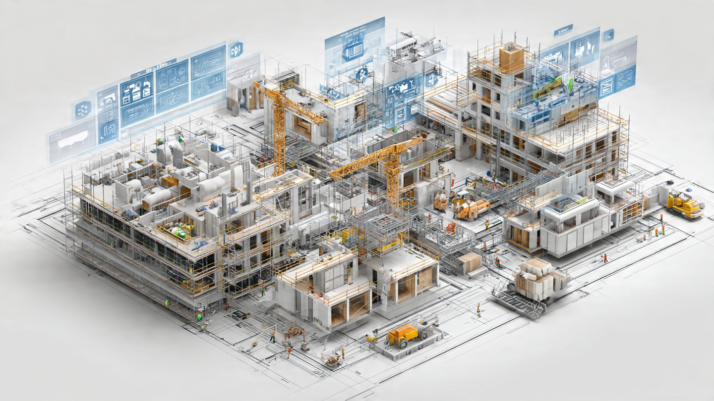

Şantiye-M Uygulaması ile İnşaat Sektöründe Dijital Dönüşüm:
Yeni
Şantiye Defteri ve Düzenlemeler

Giriş
Planlı Alanlar İmar Yönetmeliği ve ilgili mevzuat uyarınca yapı ruhsatına tabi her türlü yapım ve yıkım işinde şantiye şefi çalıştırılması mecburidir. Geleneksel yöntemlerle kâğıt üzerinde tutulan şantiye defterleri ve manuel denetim süreçleri, günümüz veri akışı hızına uyum sağlamakta zorluk çekmekteydi.
Bu ihtiyaca binaen Çevre, Şehircilik ve İklim Değişikliği Bakanlığı tarafından kullanıma sunulan Şantiye-M Yazılımı; müteahhitlerin, şantiye şeflerinin ve ilgili idarelerin tüm iş süreçlerini merkezi bir yapıda e-Devlet hizmeti olarak birleştirmeyi amaçlamaktadır. 1 Ocak 2026 tarihi itibarıyla kullanımı kademeli olarak zorunlu hale gelecek olan sistem, "Mobil Şantiye Defteri" dönemini resmen başlatıyor.
Şantiye-M'nin Amacı ve Kolaylıkları Neler?
Şantiye-M uygulamasının başlıca amacı; yapı denetim süreçlerini dijitalleştirmek, faaliyetleri kayıt altına almak ve bürokratik yükü hafifletmektir. Sistem aşağıdaki avantajları sağlar:
- Dijital Kayıt ve Takip: Şantiye şefleri; işin ilerleyişini, günlük faaliyet raporlarını, personel ve ekipman durumlarını dijital olarak kayıt altına alabilir.
- e-Devlet Entegrasyonu: Tek tıkla şantiyelere dair tüm ruhsat, proje ve geçmiş deneyim bilgilerine erişim imkânı tanır. Evrak yığılması ve fiziksel arşiv zorunluluğu ortadan kalkar.
- Modüler Yönetim: Şantiye şefinin yasal metrekare kotası ve üstlendiği iş limitleri sistem tarafından otomatik hesaplanarak limit aşımlarının baştan önüne geçilir.
Önemli Not: Mesleki Yeterlilik Kurumu (MYK) ve MEB onaylı yapı ustaları sisteme kaydedilecek; ustalık belgesi bulunmayan kişilerin şantiyelerde çalıştırılması sistem üzerinden engellenecektir.
Bir İmar Uzmanı Olarak Analiz ve Uyarılarım
Belediyelerin iş yükünü azaltan ve şeffaflığı sağlayan bu uygulamanın sahada kusursuz yürümesi için şantiye şeflerinin ve müteahhitlerin aşağıdaki uyarılara dikkat etmesi gerekir:
- Verilerin Zamanında Girilmesi: Günlük faaliyet raporları, işe yeni giren veya işten ayrılan personelin bilgileri (7 iş günü içinde) zamanında işlenmelidir. Aksi durumda yasal bildirim süreleri aşılarak idari para cezası verilebilir.
- Yetki Belgesi Kontrolleri: Taşeron firmalarla çalışırken ekiplerin MYK belgeleri mutlaka teyit edilmeli, sisteme girişte uyumsuzluk yaratacak durumlardan kaçınılmalıdır.
- Denetimlerin Elektronik İşlenmesi: Ruhsat vermeye yetkili idareler tarafından yapılan şantiye şefi denetimlerinin ve tespitlerin Bakanlık sistemine eş zamanlı düştüğü unutulmamalıdır.
Sonuç Olarak
Şantiye-M uygulaması, sektörün kağıt israfından, bürokratik gecikmelerden ve veri kaybından kurtulması adına hayati bir adımdır. Yeni sisteme hızlıca entegre olan müteahhit ve şantiye şefleri, kanuni sorumluluklarını çok daha güvenilir ve profesyonel bir yolla ispatlama şansına sahip olacaktır. Tüm sektör profesyonellerine dijital inşaat döneminde başarılar dileriz.